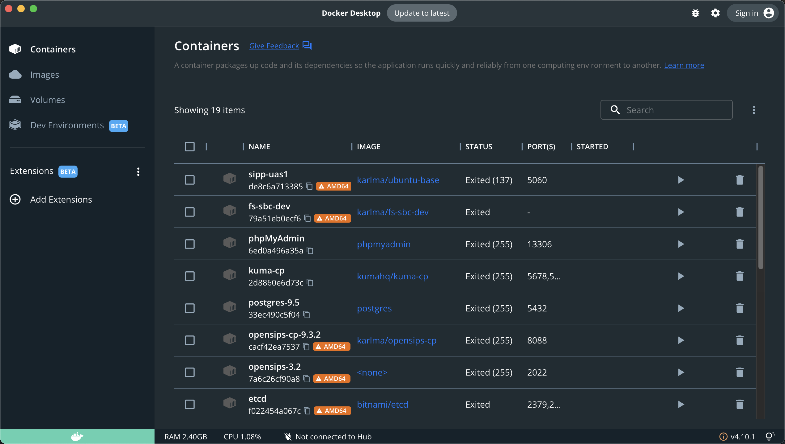
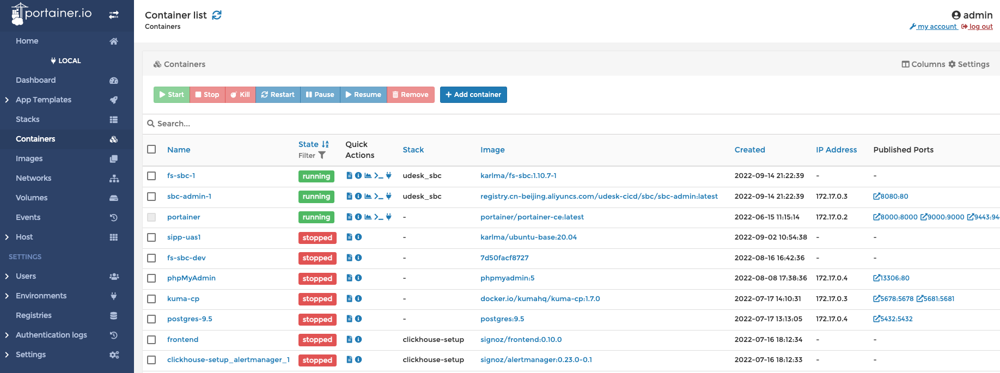

第一节 编译&运行
环境准备
docker环境
- 安装docker

- 安装portainer

创建操作系统docker镜像
- Dockerfile："ubuntu-base:20.04"
FROM amd64/ubuntu:20.04
MAINTAINER Karl Ma
# Change sourcelist to aliyun
RUN sed -i 's/archive.ubuntu.com/mirrors.aliyun.com/g' /etc/apt/sources.list && \
sed -i 's/security.ubuntu.com/mirrors.aliyun.com/g' /etc/apt/sources.list
RUN apt update
# locale
RUN apt install -y locales
RUN localedef -i en_US -c -f UTF-8 -A /usr/share/locale/locale.alias en_US.UTF-8
ENV LANG=en_US.utf8
# timezone
RUN DEBIAN_FRONTEND=noninteractive apt install -yq tzdata
RUN ln -fs /usr/share/zoneinfo/Asia/Harbin /etc/localtime && \
dpkg-reconfigure -f noninteractive tzdata
ENV TZ="Asia/Harbin"
# vim
RUN apt install -y vim \
iputils-ping \
net-tools \
git
# clear apt cache
RUN rm -rf /var/lib/apt/lists/*
- build
docker build --platform linux/x86_64 -t ubuntu-base:20.04 .
创建编译环境docker镜像
- Dockerfile："fs-dev:1.10.7-1"
FROM karlma/ubuntu-base:20.04
MAINTAINER Karl Ma
ENV REFRESHED_AT 2022-08-16
RUN apt-get update && apt-get install -y \
autoconf \
cmake \
g++ \
libcurl4-openssl-dev \
libedit-dev \
libjpeg-dev \
libldns-dev \
liblua5.2-dev \
libmp3lame-dev \
libmpg123-dev \
libncurses5-dev \
libopus-dev \
libpcap-dev \
libpcre3-dev \
libsctp-dev \
libshout3-dev \
libsndfile1-dev \
libspeex-dev \
libspeexdsp-dev \
libsqlite3-dev \
libssl-dev \
libtiff-dev \
libtiff-dev \
libtool-bin \
libmariadb-dev \
mariadb-client \
lua5.2 \
make \
unixodbc-dev \
uuid-dev \
yasm \
zlib1g-dev \
curl \
telnet \
&& rm -rf /var/lib/apt/lists/*
VOLUME /usr/local/freeswitch
WORKDIR /usr/local/freeswitch
- build
docker build --platform linux/x86_64 -t fs-dev:1.10.7-1 .
获取源代码
- 获取FreeSWITCH源码
git clone -b v1.10.7 https://github.com/signalwire/freeswitch.git
- 获取sofia源码
cd /usr/local/src/freeswitch #在freeswitch源码目录下
git clone https://github.com/freeswitch/sofia-sip.git
- 获取spandsp源码
cd /usr/local/src/freeswitch
git clone https://github.com/freeswitch/spandsp.git
编译sofia和spandsp
- 启动容器
docker run -it -v 本地源码目录:/usr/local/src/freeswitch -v 本地安装目录:/usr/local/freeswitch fs-dev:1.10.7-1 /bin/bash
- 编译sofia
cd sofia-sip
./bootstrap.sh -j
./configure --prefix=/usr/local/freeswitch
make
make install
ldconfig -p
安装完成在下面目录中
/usr/local/freeswitch/lib/libsofia-sip-ua*
/usr/local/freeswitch/lib/pkconfig/sofia-sip-ua.pc
/usr/local/freeswitch/include/sofia-sip-1.13
- 编译spandsp
cd spandsp/
./bootstrap.sh -j
./configure --prefix=/usr/local/freeswitch
make
make install
ldconfig -p
安装完成后在下面目录中
/usr/local/freeswitch/lib/libspandsp*
/usr/local/freeswitch/include/spandsp
/usr/local/freeswitch/include/spandsp.h
- export PKG_CONFIG_PATH
export PKG_CONFIG_PATH=$PKG_CONFIG_PATH:/usr/local/freeswitch/lib/pkgconfig
- ldconfig
echo "/usr/local/freeswitch/lib" > /etc/ld.so.conf.d/freeswitch.conf
ldconfig
ldconfig -p|grep sofia
ldconfig -p|grep spandsp
编译freeswitch
cd /usr/local/src/freeswitch
./bootstrap.sh -j
- 修改modules.conf
applications/mod_commands
applications/mod_conference
applications/mod_curl
applications/mod_db
applications/mod_directory
applications/mod_distributor
applications/mod_dptools
applications/mod_easyroute
applications/mod_expr
applications/mod_fifo
applications/mod_hash
applications/mod_httapi
applications/mod_http_cache
asr_tts/mod_unimrcp
codecs/mod_opus
dialplans/mod_dialplan_xml
endpoints/mod_loopback
endpoints/mod_rtc
endpoints/mod_sofia
event_handlers/mod_cdr_sqlite
event_handlers/mod_event_socket
formats/mod_local_stream
formats/mod_native_file
formats/mod_sndfile
formats/mod_tone_stream
languages/mod_lua
loggers/mod_console
loggers/mod_logfile
loggers/mod_syslog
say/mod_say_en
say/mod_say_zh
xml_int/mod_xml_curl
- configure
./configure --enable-core-odbc-support
目录结构
Locations:
prefix: /usr/local/freeswitch
exec_prefix: /usr/local/freeswitch
bindir: ${exec_prefix}/bin
confdir: /usr/local/freeswitch/conf
libdir: ${exec_prefix}/lib
datadir: /usr/local/freeswitch
localstatedir: /usr/local/freeswitch
includedir: /usr/local/freeswitch/include/freeswitch
certsdir: /usr/local/freeswitch/certs
dbdir: /usr/local/freeswitch/db
grammardir: /usr/local/freeswitch/grammar
htdocsdir: /usr/local/freeswitch/htdocs
fontsdir: /usr/local/freeswitch/fonts
logfiledir: /usr/local/freeswitch/log
modulesdir: /usr/local/freeswitch/mod
pkgconfigdir: ${exec_prefix}/lib/pkgconfig
recordingsdir: /usr/local/freeswitch/recordings
imagesdir: /usr/local/freeswitch/images
runtimedir: /usr/local/freeswitch/run
scriptdir: /usr/local/freeswitch/scripts
soundsdir: /usr/local/freeswitch/sounds
storagedir: /usr/local/freeswitch/storage
cachedir: /usr/local/freeswitch/cache
- make install
make
make install
docker启动freeswitch
-
docker网络尽量使用用host模式
-
Dockerfile
FROM karlma/ubuntu-base:20.04
MAINTAINER Karl Ma
ENV REFRESHED_AT 2022-08-16
RUN groupadd -r freeswitch --gid=999 && useradd -r -g freeswitch --uid=999 freeswitch
RUN apt-get update && apt-get install -y \
libcurl4-openssl-dev \
libedit-dev \
libjpeg-dev \
libldns-dev \
liblua5.2 \
libmp3lame-dev \
libmpg123-dev \
libncurses5 \
libopus-dev \
libpcap-dev \
libpcre3 \
libsctp-dev \
libshout3 \
libsndfile1 \
libspeex-dev \
libspeexdsp-dev \
libsqlite3-dev \
libssl-dev \
libtiff-dev \
libtool-bin \
lua5.2 \
unixodbc \
uuid \
zlib1g \
curl \
telnet \
libmariadb-dev \
mariadb-client \
sngrep \
gosu
RUN apt autoremove
RUN apt clean && rm -rf /var/lib/apt/lists/*
ENV FS_SBC_BASE freeswitch # 编译安装的目标
ENV DEPLOY_BASE deploy # 相关脚本目标
# Limits Configuration
COPY ${DEPLOY_BASE}/freeswitch.limits.conf /etc/security/limits.d/
COPY ${DEPLOY_BASE}/docker-entrypoint.sh /
RUN mkdir -p /usr/local/freeswitch
COPY ${FS_SBC_BASE}/bin /usr/local/freeswitch/bin
COPY ${FS_SBC_BASE}/certs /usr/local/freeswitch/certs
COPY ${FS_SBC_BASE}/fonts /usr/local/freeswitch/fonts
COPY ${FS_SBC_BASE}/lib /usr/local/freeswitch/lib
COPY ${FS_SBC_BASE}/mod /usr/local/freeswitch/mod
COPY ${FS_SBC_BASE}/recordings /usr/local/freeswitch/recordings
COPY ${FS_SBC_BASE}/share /usr/local/freeswitch/share
COPY ${FS_SBC_BASE}/sounds /usr/local/freeswitch/sounds
COPY ${FS_SBC_BASE}/storage /usr/local/freeswitch/storage
RUN mkdir -p /usr/local/freeswitch/db
RUN mkdir -p /usr/local/freeswitch/run
RUN mkdir -p /var/log/freeswitch
RUN ln -s /var/log/freeswitch /usr/local/freeswitch/log
SHELL ["/bin/bash"]
HEALTHCHECK --interval=15s --timeout=5s \
CMD /usr/local/freeswitch/bin/fs_cli -x status | grep -q ^UP || exit 1
# xml rpc
EXPOSE 7744/tcp
# sip
EXPOSE 7854/udp
EXPOSE 7854/tcp
EXPOSE 8891/udp
EXPOSE 8891/tcp
# rtp
EXPOSE 16384-17185/udp
WORKDIR /usr/local/freeswitch
VOLUME /usr/local/freeswitch/conf
VOLUME /usr/local/freeswitch/scripts
VOLUME /var/log/freeswitch
ENTRYPOINT ["/docker-entrypoint.sh"]
CMD ["freeswitch"]
- deploy/freeswitch.limits.conf文件
freeswitch soft core unlimited
freeswitch soft data unlimited
freeswitch soft fsize unlimited
freeswitch soft memlock unlimited
freeswitch soft nofile 999999
freeswitch soft rss unlimited
freeswitch hard stack 240
freeswitch soft cpu unlimited
freeswitch soft nproc unlimited
freeswitch soft as unlimited
freeswitch soft priority -11
freeswitch soft locks unlimited
freeswitch soft sigpending unlimited
freeswitch soft msgqueue unlimited
freeswitch soft nice -11
- 启动脚本deploy/docker-entrypoint.sh
#!/bin/bash
set -e # 运行出错即可退出
if [ "$1" = 'freeswitch' ]; then
chown -R freeswitch:freeswitch /usr/local/freeswitch
chown -R freeswitch:freeswitch /var/log/freeswitch
if [ -d /docker-entrypoint.d ]; then
for f in /docker-entrypoint.d/*.sh; do
[ -f "$f" ] && . "$f"
done
fi
exec gosu freeswitch /usr/local/freeswitch/bin/freeswitch -u freeswitch -g freeswitch -nonat -c
fi
exec "$@" # 执行非freeswitch命令
问题
- 自己动手做一遍，输出一个FreeSWITCH的docker镜像
- 系统启动后，注册一个分机，拨9196，测试一下echo
- FreeSWITCH的启动参数-nonat是什么意思，-nc,ncwait是什么意思？